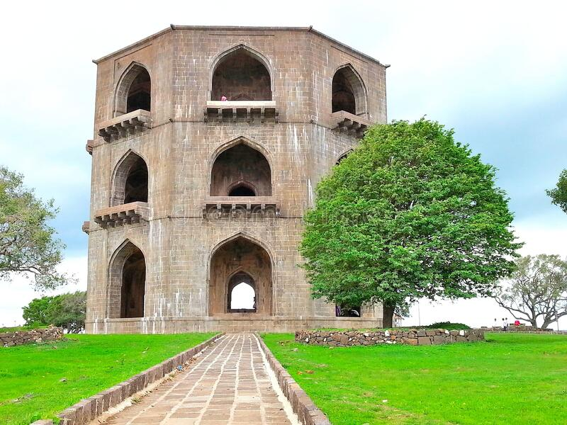

Ahmenagar District

The Tomb of Salabat Khan II is also commonly but mistakenly known as Chandbiwi's Mahel, Chand Bibi Palace or similar variations. It is a three-storey stone structure situated on the crest of a hill, 13 km from Ahmednagar city in the state of Maharashtra, India,
History of Ahmednagar
- The town Ahmednagar was founded in 1490 by Ahmad Nizam Shah I on the site of a more ancient city, Bhingar. With the breakup of the Bahmani Sultanate, Ahmad established a new sultanate in Ahmednagar, also known as Nizam Shahi dynasty.
- It was one of the Deccan sultanates, which lasted until its conquest by Mughal emperor Shah Jahan in 1636. Aurangzeb, the last Mughal emperor, who spent the latter years of his reign, 1681–1707, in the Deccan, died in Ahmednagar and is buried at Khuldabad, near Aurangabad in 1707, with a small monument marking the site.
- In 1759, the Peshwa of the Marathas obtained possession of the place from Nizam of Hyderabad and in 1795 it was ceded by the Peshwa to the Maratha chief Daulat Rao Sindhia. Ahmednagar was besieged by a British force under Richard Wellesley and captured. It was afterward restored to the Marathas, but again came into the possession of the British in 1817, according to the terms of the Treaty of Poona, and was known as Ahmednuggur.
Transport in Ahmednagar
- hmednagar city has air connectivity by Seaplane service. The port for Seaplane is located at the Mula Dam water reservoir, 30 min away from Ahmednagar City.
- Ahmednagar is well connected by roads with major cities of Maharashtra and other states.
- Several ways to have a commute in the city. Autorickshaws, which can be trusted as a private commute in the city. Sharing rikshaws also been part of the daily life of the citizen.
Tourist Places in Ahmednagar
| No. |
Tourist Palace |
| 1 |
Ahmednagar Fort |
| 2 |
Cavalry Tank Museum |
| 3 |
Mula Dam |
| 4 |
Chand Bibi Mahal |
| 5 |
Shirdi Sai Baba |